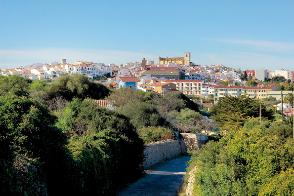
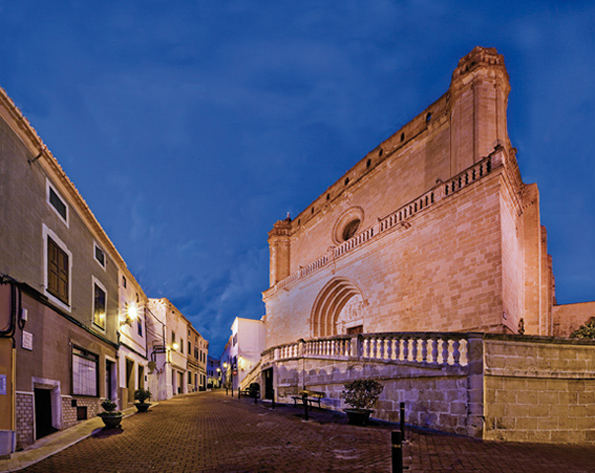

Alaior, city and municipality of four winds
The character and geography of Mahón and Ciutadella have clearly been influenced by their ports. Alaior which considers itself the third most important is the city of hillocks and slopes with views that are exposed to the four winds. To put it another way: this enclave has roller coaster hills in the high part and lower slopes that are well ventilated and have ample horizons over the island. With its agreeable countryside, and varied perspectives it is probably the pleasantest, cleanest town on the island with the freshest air. None of the other eleven historical towns are as exalted as Alaior, with its clarity, expanding vertically to the vaulted ceiling of the sky. And understand: this effect has nothing to do with inhuman skyscrapers - there are none. It comes, from its peculiar position, a watchful town, like the look out towers.
Alaior, I insist, has something of an eminent locality, in a more precise way than the adjective suggests; because, in effect, its nucleus is situated on a peak which dominates the background of its setting. It can be described as the most fortified city in Menorca. It has been urban for centuries, first as an Arab settlement, Ihalor, and later, Christian, Alaior.
In appearance it is not Arabian, it has winding streets that are narrow and calming with an abundance of white-washed houses. The Christian side is clearer, the spires of the churches pointing to the spreading sky. But in reality, it has an urban structure that has developed with the clear influence of the lower Middle Ages: i.e. a close, clean, settlement, with a sinuosity in the streets that have had to adapt to the irregular perimeters of the early orchards, market gardens, corrals and houses of the first rural inhabitants.
 It is known that initially there was a settlement of scattered dwellings from the Muslim era dispersed around the hill. The most outstanding was the Ihalor farm. After the Christian conquest in1287 the monarch of the Kingdom of Mallorca, Jaime II, son of the conqueror, ordered its valuation and purchase on behalf of the crown. Immediately he decided the rules for building and residence. In a short time the town was formally founded. This occurred in 1304, an order was sent to the royal proctor Pere Bernat asking him to nominate three valuers. So it was stipulated “Nos ei ipsam alquerium volumus emere et habere ad faciendum ibi popolationem” We wish to buy and acquire that farm to build a town.
It is known that initially there was a settlement of scattered dwellings from the Muslim era dispersed around the hill. The most outstanding was the Ihalor farm. After the Christian conquest in1287 the monarch of the Kingdom of Mallorca, Jaime II, son of the conqueror, ordered its valuation and purchase on behalf of the crown. Immediately he decided the rules for building and residence. In a short time the town was formally founded. This occurred in 1304, an order was sent to the royal proctor Pere Bernat asking him to nominate three valuers. So it was stipulated “Nos ei ipsam alquerium volumus emere et habere ad faciendum ibi popolationem” We wish to buy and acquire that farm to build a town.
Until the last third of the XIX century, during five centuries the economy was based on agriculture and cattle. Today the most notable - at least the weightiest for the local GDP - is the Coinga cooperative (1966) which is dedicated to dairy products. Industrialization came to Alaior with the shoe industry which gained prestige in a city of entrepreneurs. Until the sixties and the seventies there were a concentration of some forty workshops for shoemakers and a group of well known businessmen. Today there are only a few factories left, some (like the case of Pons Quintana) are internationally well known. Between the petrol crisis of 1973 and the hard process of industrial reconversion in the Spain of the eighties, a third route, tourism, has been taken. Nowadays the focal points are on the south coast of the municipality. This phenomenon has created urbanizations of temporary and permanent residents. Both groups act as satellites for the town and have without doubt transformed the features of the zone: Cala en Porter, La Argentina, Son Vitamina, Son Bou, San Jaime and Torre Soli. According to the latest census, all together there are about 10.000 inhabitants.
The architecture of the town is predominantly religious, the Santa Eulalia parish from the XVII century, sitting atop the summit of the legendary Ilahor farm; San Diego, a Franciscan convent also XVII century, now converted into a culture centre. Apart from these, the San Pere (St. Peter) hermitage in the extreme north of the city, and the chapel of Gracía (Grace) next to the main square that is no longer used religiously although it is a memory in stone of a complex modern history (XV, XVI, and XVII) as a charitable hospital, a chapel and the original town hall.
Civil architecture almost totally consists of detached buildings, with ground floor, first floor and skylight. An outstanding example is the town hall from the XVII century; and the old Salort House (XIX century) now converted as part of the UIB (Balearic University).
However the shining lights of the heritage are the prehistoric sites of Alaior; the municipality could certainly claim to be the archaeological capital of the island. The spectacular sites at Torre d´En Galmés (the largest prehistoric village in the Balearic Islands), the admirable nucleus of Torralba d´En Salort, So na Caçana, the grottos of the necropolis in Calascoves, the Alcaidús village or the naveta at Rafal Rubí, are among the many declared places of Cultural Interest.
The people in Alaior are famous for their hospitality. They are cheerful, active and tremendously hardworking. They believe in culture as the foundation of prosperity, and they view themselves as a group of genuine and traditional Menorcans. Alaior is a stopping point on the east-west backbone of Menorca; it adopts an expectant attitude, keeping a watchful eye on its surroundings. So it was when the Roman road crossed it, it continued when the Camí d´en Kane (1722) built during English colonial times also ran by it and it continues with the main road (1900) and it could symbolize its flag of always being open to the four winds of the island. And further.